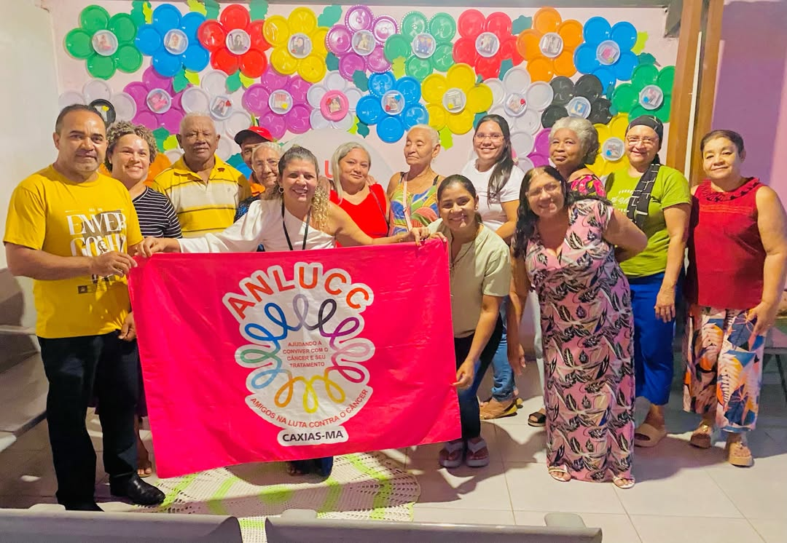
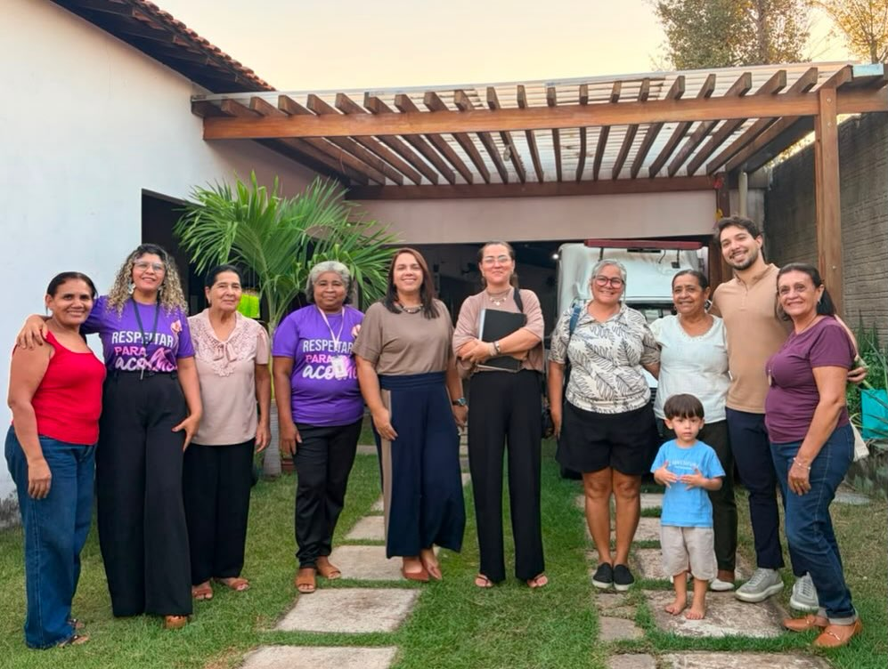
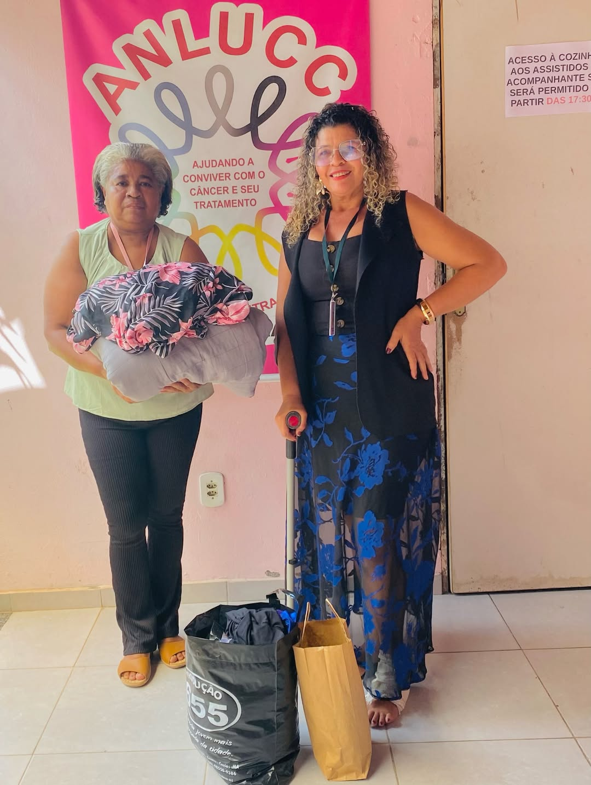
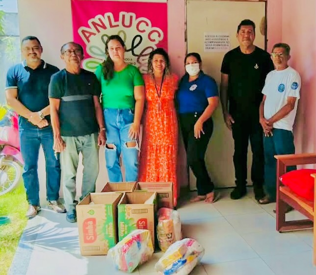
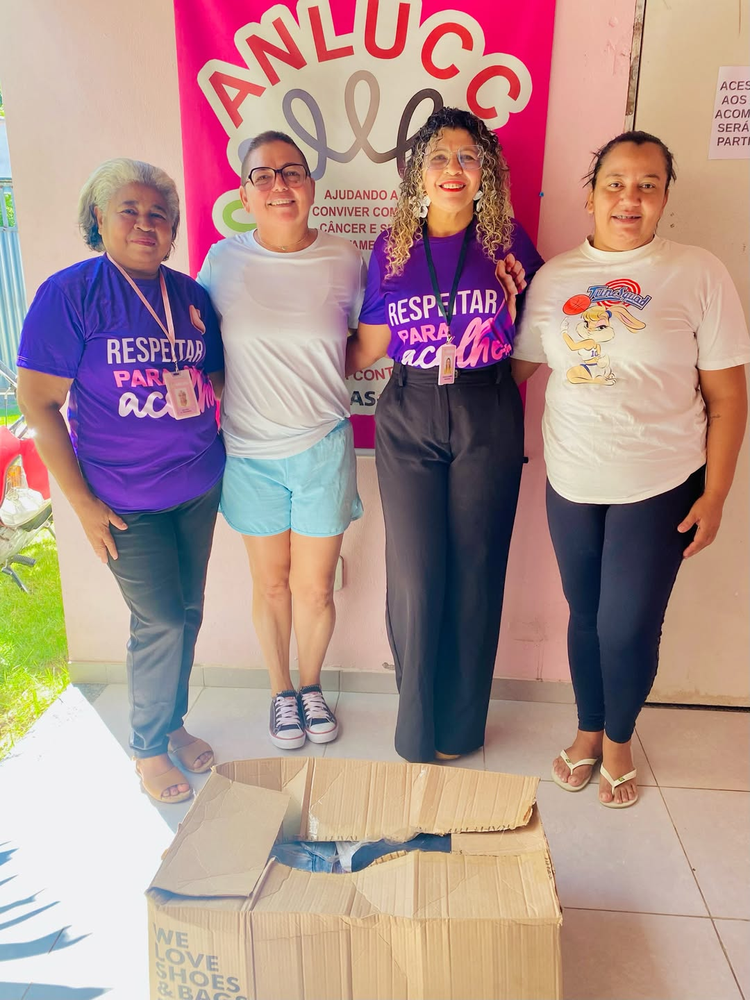
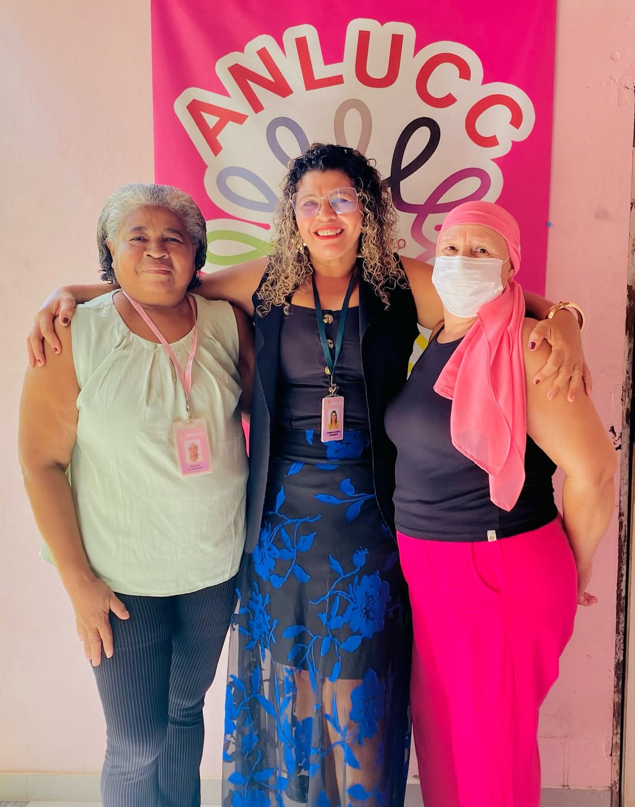
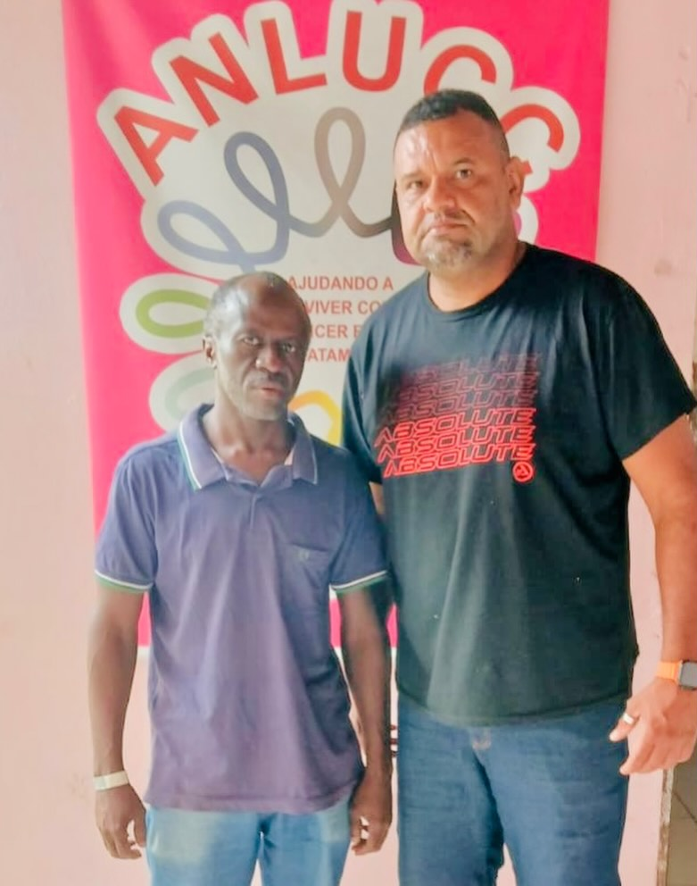

Caxias — Maranhão
Acolher,
cuidar e
caminhar juntos.
A ANLUCC é uma organização sem fins lucrativos que apoia pacientes com câncer e suas famílias em Caxias - MA desde 2011.

Nossa história
Uma experiência
que virou amor.
A ANLUCC nasceu da experiência pessoal de Dirce Maria, que enfrentou o câncer e precisou se tratar em São Paulo. Longe de casa, foi acolhida por uma casa de apoio — e aquele cuidado transformou sua vida.
Ao retornar a Caxias, Dirce criou um grupo de apoio para que nenhuma outra mulher precisasse enfrentar o câncer sozinha. O grupo cresceu, se organizou e se tornou a ANLUCC — reconhecida como Organização da Sociedade Civil de Interesse Público.
Hoje, sob a presidência de Crismele de Brito, a ANLUCC atende centenas de pacientes por ano, oferecendo moradia, alimentação, suporte médico e psicológico de forma completamente gratuita.
- Organização sem fins lucrativos
- Atendimento 100% gratuito
- Sede própria em Caxias - MA
O que a ANLUCC oferece
Serviços gratuitos
para quem mais precisa
Acolhimento e Hospedagem
Dormitórios climatizados e espaços de convivência para pacientes que precisam realizar tratamento fora de seu município.
Apoio Psicológico
Acompanhamento com psico-oncólogos para fortalecer a saúde mental de pacientes e familiares durante o tratamento.
Atendimento Médico
Consultório com profissionais especializados para orientação e acompanhamento ao longo de toda a jornada de tratamento.
Fisioterapia
Sessões de fisioterapia para recuperação, prevenção de sequelas e melhora da qualidade de vida das pacientes.
Alimentação e Cestas
Refeições e cestas básicas fornecidas gratuitamente para pacientes hospedadas e famílias em situação de vulnerabilidade.
Horta Terapêutica
Espaço de cultivo coletivo que une terapia ocupacional, bem-estar e o prazer de ver algo crescer e florescer.
Estrutura e projetos
Uma base sólida
para cuidar melhor
Sede Própria
Espaço próprio da ANLUCC, reformado com doações e campanhas da comunidade.
7 Espaços Cedidos
Estruturas cedidas pela Prefeitura de Caxias - MA para ampliar o atendimento.
Energia Solar
Instalação de painéis solares para reduzir custos e tornar a operação sustentável.
Ambulância Doada
Veículo para transporte de pacientes para tratamentos e consultas fora do município.
Loja ANLUCC
Loja solidária com renda revertida integralmente para os programas da organização.
Reforma em Andamento
Ampliação das instalações financiada por doações, campanhas e parcerias locais.



Histórias reais
Vozes que inspiram

Cada caixa entregue representa horas de dedicação voluntária. A ANLUCC mobiliza a comunidade para que nenhuma família passe por necessidade durante o tratamento.
Grupo de VoluntáriasAção de doação — Caxias-MA
Ver o sorriso das pacientes que chegam com medo e partem com esperança é o que move toda a equipe. A ANLUCC é um lar para quem mais precisa de cuidado.
Pacientes e equipeDia de atendimento
A força da ANLUCC vem da comunidade. Parceiros, doadores e voluntários constroem juntos uma rede de apoio que transforma vidas em Caxias e na região.
Parceiros e apoiadoresParceria e solidariedadeCalendário 2025
Campanhas e eventos
Outubro Rosa 2025
Campanha anual de conscientização sobre o câncer de mama e ginecológico, com atividades abertas à comunidade.
Chá Rosa
Evento de arrecadação com convite simbólico de R$ 100. Uma tarde de solidariedade, música e muito carinho.
Doação de Cabelos
Campanha de doação de cabelos para fabricação de perucas destinadas às pacientes em tratamento quimioterápico.
Quem caminha conosco
Nossos parceiros
SincoplemaCohabe NetSESC
Comercial Rio do PeixeFrigochave
Prefeitura de CaxiasPizzaria Mamma Mia
Quer ser parceiro da ANLUCC? Entre em contato
Você não enfrenta
isso sozinha.
Se você ou alguém da sua família está passando por um diagnóstico de câncer, entre em contato. A ANLUCC está aqui para acolher.
Falar no WhatsAppFaça parte
Apoie a ANLUCC
Doe via PIX
Sua doação é integralmente revertida para o atendimento de pacientes com câncer em Caxias - MA. Qualquer valor faz diferença.
Chave PIXanlucc@anlucc.org.br
ANLUCC — CNPJ 00.000.000/0001-00 · Caxias - MA
Seja voluntário
Oferecemos formação para voluntários em acompanhamento emocional, logístico e administrativo. Toda ajuda é bem-vinda — independente do quanto de tempo você tem disponível.
- Acompanhamento de pacientes em consultas
- Apoio nas atividades da casa
- Captação de recursos e campanhas
- Trabalho administrativo e comunicação
Fale conosco
Estamos aqui para acolher
Seja você uma paciente, familiar, doador ou futuro voluntário — nossa equipe responde com carinho. Entre em contato pelo formulário, WhatsApp ou venha nos visitar.
Tel
WhatsApp / Telefone(99) 9 9999-9999Seg–Sex · 8h–18h
Mail
E-mailcontato@anlucc.org.brResposta em até 24h
End
EndereçoCaxias — MaranhãoConsulte horários de visita
Mensagem enviada!
Obrigado pelo contato. Nossa equipe responderá em breve com muito carinho.